Geselecteerd werk · 2024
Live /s Live
Meer ruimte voor muziek. En voor elkaar.
← Alle casesJUNE 28 / 2024
AN ANTWERP CITY
MUSIC FESTIVAL
NOW!
BUY TICKETS
Een festivalmerk met ruimte om te ademen.
Een goede line-up trekt mensen aan. Maar hoe laat je voelen wat een festival nog meer bijzonder maakt? Samen met FKP Scorpio Belgium scherpten we het verhaal en de uitstraling van Live /s Live aan voor de editie van 2024.
- Klant
- FKP Scorpio Belgium
- Project
- Live /s Live 2024
- Onze rol
- Merkstrategie · Artdirection · Campagnetoepassingen
- Locatie
- Antwerpen
De beleving
Live, zoals het voelt
De muziek, het park en de mensen samen: die sfeer stond centraal in het verhaal voor 2024. De website hierboven brengt die festivalbeleving en het designsysteem samen. Een van de sfeerbeelden komt uit de editie van 2023.
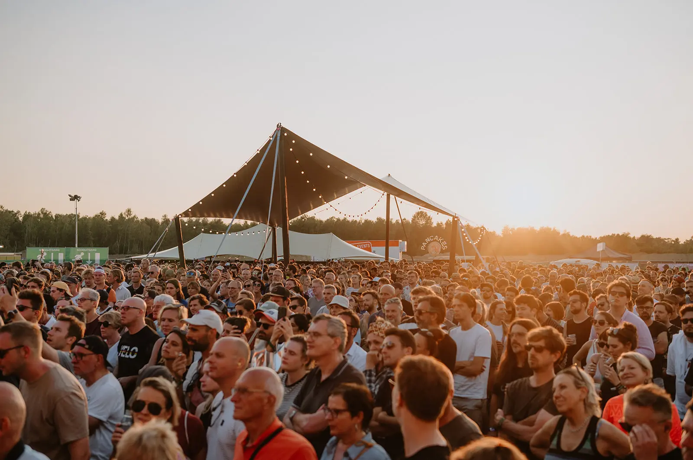
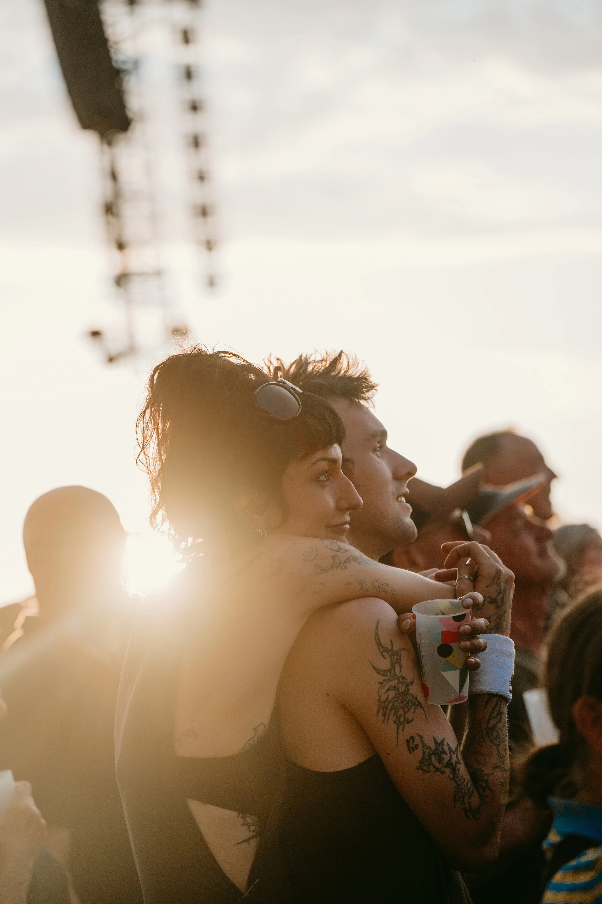
01
Van concert naar festivalgevoel
Na de editie van 2023 wilde het team meer vertellen dan wie er op het podium stond. Naast muziek verdienden ook de sfeer, het samenzijn, de aandacht voor bezoekers en de band met Antwerpen een plaats in het verhaal. Het bestaande logo, de bloem, de kleuren en de typografie vormden het vertrekpunt voor een rijkere merkwereld.
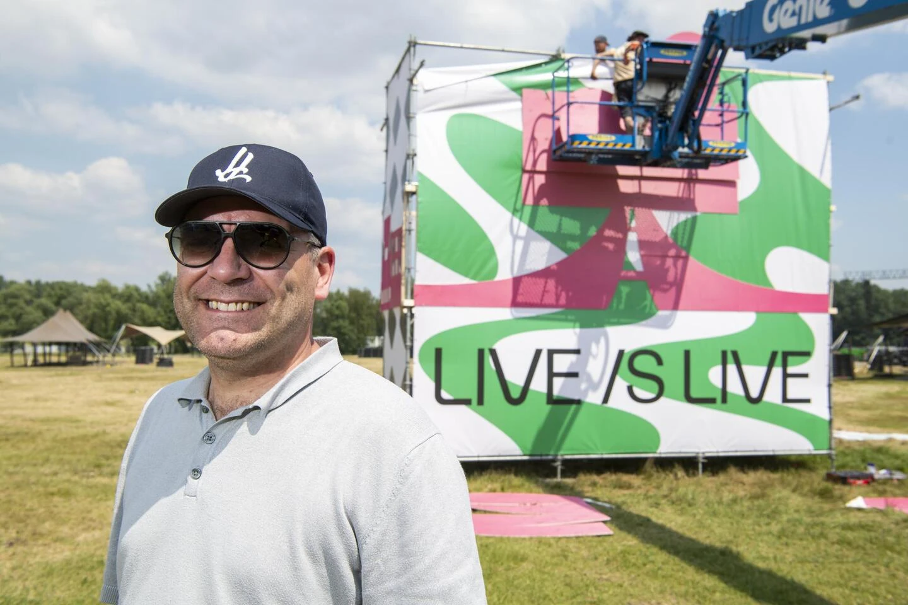
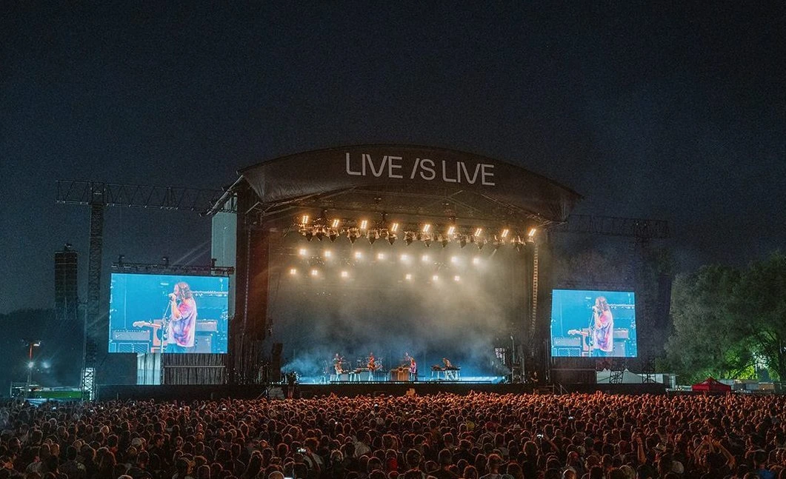
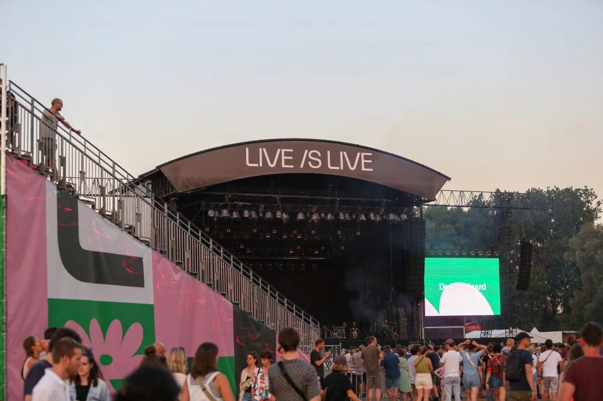
02
Een verhaal om op te bouwen
Samen met het team werkten we de merkstrategie uit: van missie en positionering tot merkwaarden, doelgroep en tone of voice. De kern: een Antwerps muziekfestival waar mensen samen van zorgvuldig gekozen artiesten genieten. Sterke muziek, een ontspannen setting, comfort en lokale verankering kwamen samen in één verhaal, met een duidelijke hiërarchie voor de communicatie.
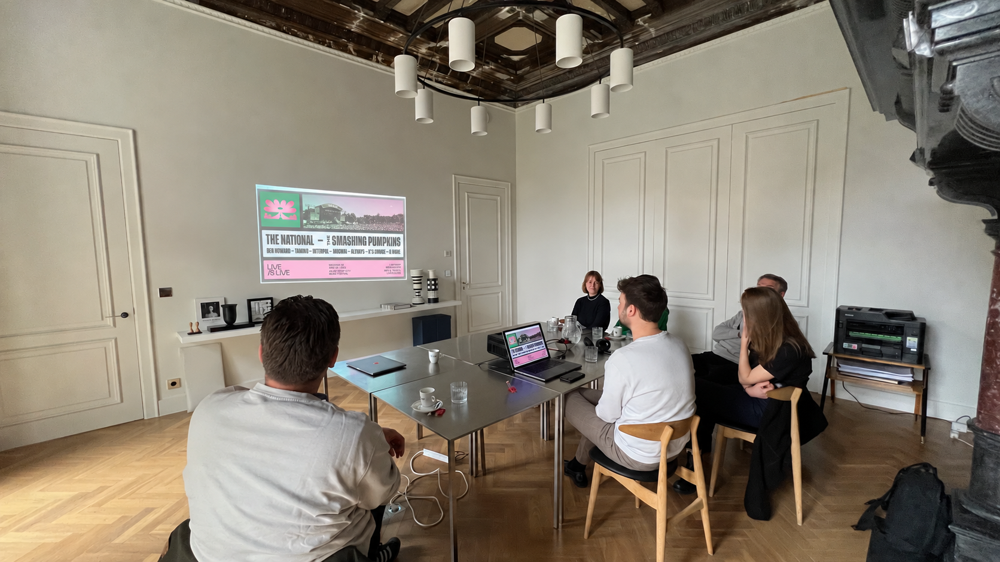
03
Een designsysteem dat meegroeit
Een festivalcampagne verandert voortdurend: namen komen erbij en elk kanaal vraagt een ander formaat. Daarom werkten we de bestaande identiteit uit tot een flexibel designsysteem. De bloem, kleuren, typografie en donkere kaders brengen artiesten, beeld en informatie samen. In het brandbook legden we de bouwstenen vast, zodat het team de campagne herkenbaar kon doorvertalen naar affiches, social en website.
4700 BOLD
EDITORS
GOSSIP
AN ANTWERP CITY MUSIC FESTIVAL
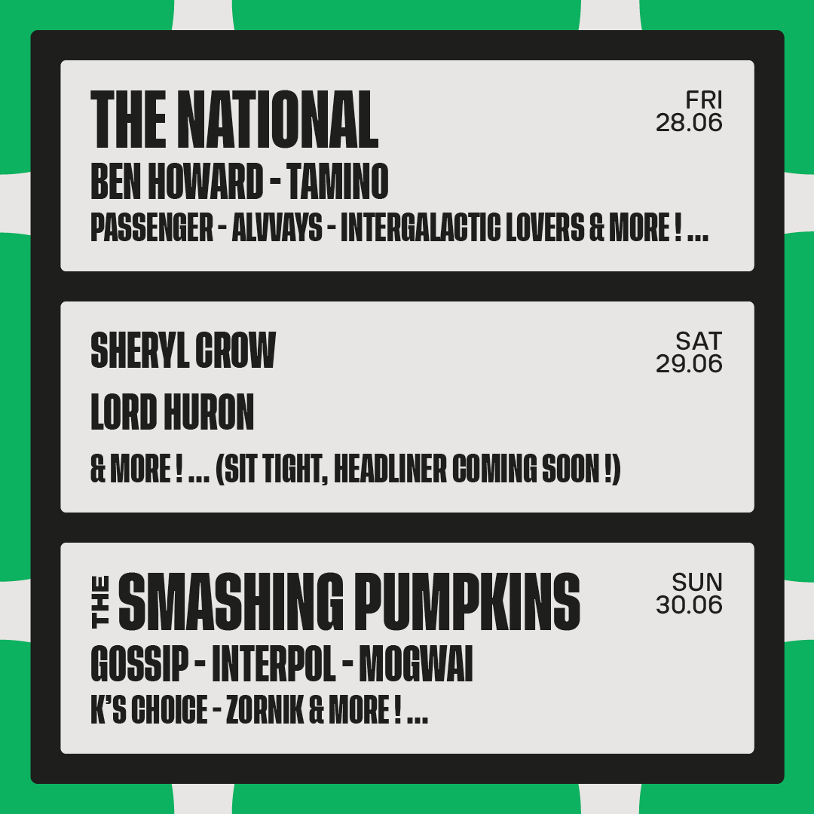
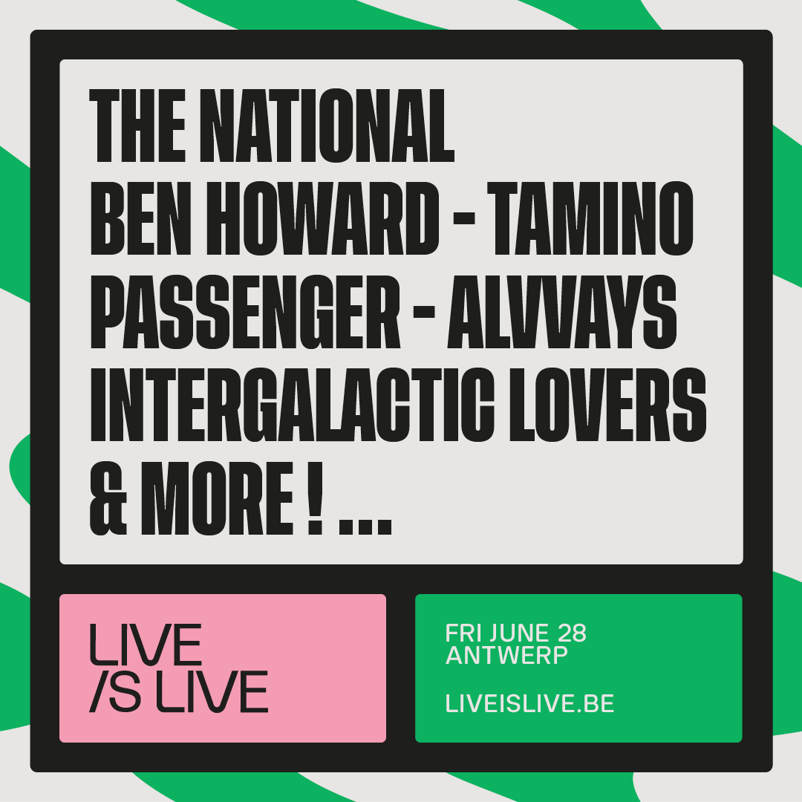
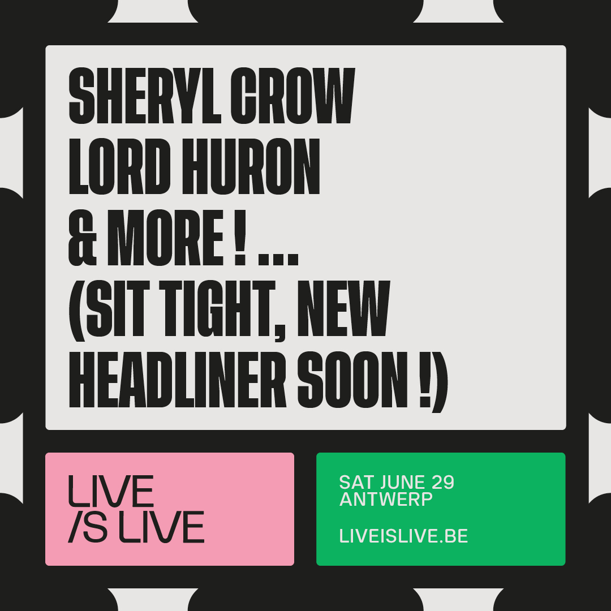
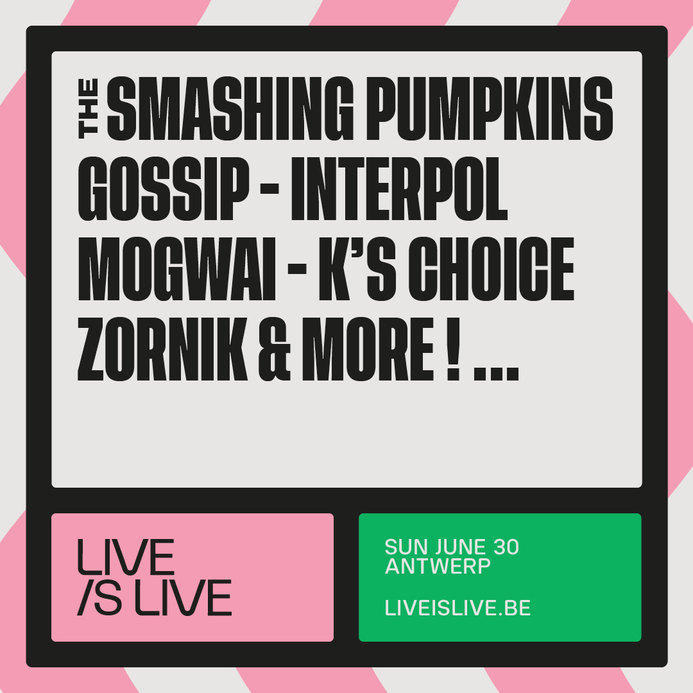
04
Een campagne in beweging
Van de eerste affiches in oktober 2023 groeide de campagne mee met de line-up. In november volgden nieuwe namen en bewegende formaten. In februari 2024 kreeg elke festivaldag een eigen overzicht, naast dat voor het hele weekend. In maart kwamen de uitgebreidere programmatie en podia samen. Het systeem bleef flexibel, ook wanneer namen kort voor publicatie veranderden.
05
Het festival om mee te nemen
De wereld van Live /s Live kreeg in 2024 ook buiten de campagne vorm. Samen met Monar Antwerp bracht het festival een capsulecollectie uit, met golvende vormen geïnspireerd op het water van de Middenvijver. Daarnaast werkte Live /s Live samen met Antwerp Avenue aan telefoonhoesjes. Zo kreeg de festivalwereld ook een plaats in het dagelijks leven. De shopfoto’s tonen de eerdere Monar-collectie van 2023, die tijdens de aanloop naar 2024 nog verkrijgbaar was.
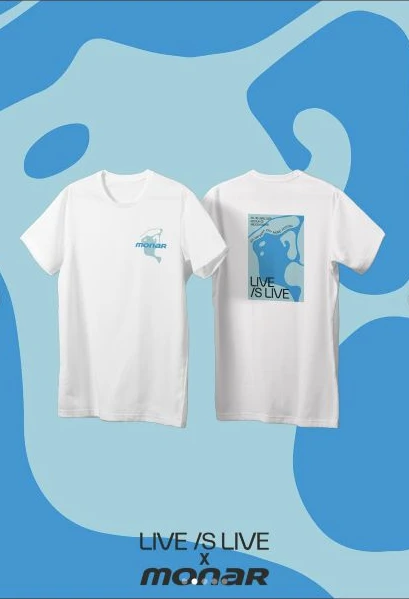
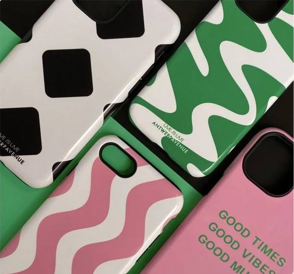
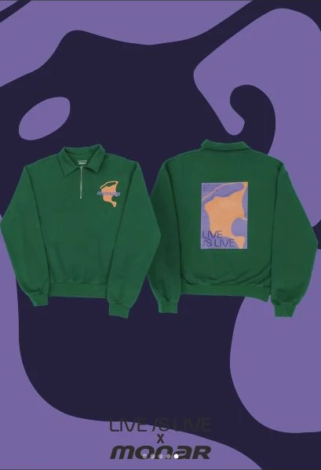
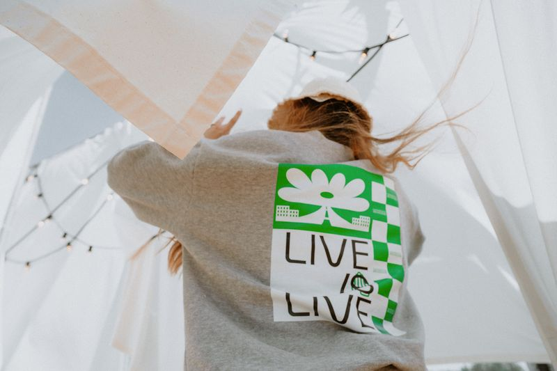
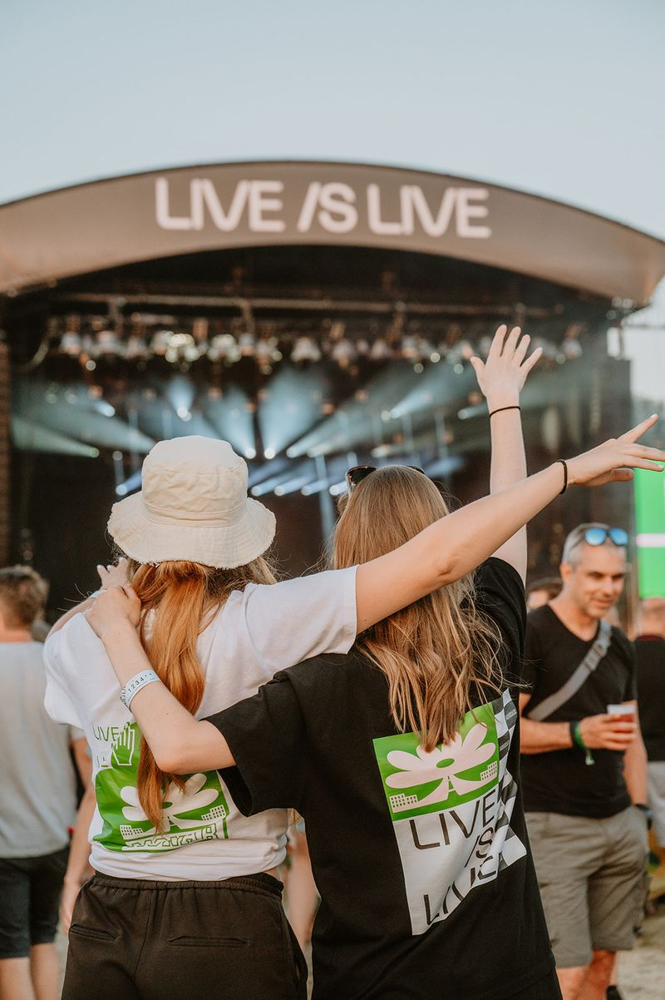
06
Gemaakt om verder te leven
Van merkstrategie tot de concrete bouwstenen voor de campagne: samen met FKP Scorpio maakten we de eigenheid van Live /s Live duidelijker en zichtbaar op de plekken waar bezoekers het festival ontmoeten.